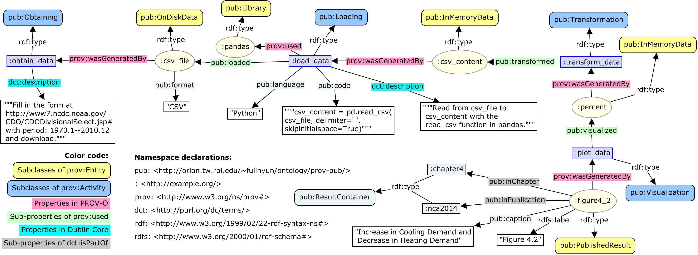

Hello! This is the main page for PROV-PUB-O, the specialized provenance ontology for research publications, developed by Linyun Fu and Xiaogang Ma.
PROV-PUB-O is modularized into two parts:
Below is a comprehensive sample usage of this ontology. It shows how to describe the generation process of a figure found in a certain chapter of a research publication. Figure 1 contains the most important steps of the process and the details are included in Turtle format.

Figure 1: PROV-PUB-O comprehensive sample usage
The details of this example in Turtle are:
@prefix pub: <http://orion.tw.rpi.edu/~fulinyun/ontology/prov-pub/>.
@prefix prov: <http://www.w3.org/ns/prov#>.
@prefix : <http://example.org/>.
@prefix rdf: <http://www.w3.org/1999/02/22-rdf-syntax-ns#>.
@prefix rdfs: <http://www.w3.org/2000/01/rdf-schema#>.
@prefix owl: <http://www.w3.org/2002/07/owl#>.
@prefix xsd: <http://www.w3.org/2001/XMLSchema#>.
@prefix dcterms: <http://www.purl.org/dc/terms/>.
# Subclasses of prov:Entity defined in PROV-PUB-O in the sample usage
pub:Data a owl:Class;
rdfs:subClassOf prov:Entity.
pub:OnDiskData a owl:Class;
rdfs:subClassOf pub:Data.
pub:InMemoryData a owl:Class;
rdfs:subClassOf pub:Data.
pub:PublishedResult a owl:Class;
rdfs:subClassOf prov:Entity.
pub:Library a owl:Class;
rdfs:subClassOf prov:Entity.
# Subclasses of prov:Activity defined in PROV-PUB-O in the sample usage
pub:DataGeneration a owl:Class;
rdfs:subClassOf prov:Activity.
pub:Obtaining a owl:Class;
rdfs:subClassOf pub:DataGeneration.
pub:Loading a owl:Class;
rdfs:subClassOf pub:DataGeneration.
pub:Transformation a owl:Class;
rdfs:subClassOf pub:DataGeneration.
pub:ResultGeneration a owl:Class;
rdfs:subClassOf prov:Activity.
pub:Visualization a owl:Class;
rdfs:subClassOf pub:ResultGeneration.
# Result container classes defined in PROV-PUB-O in the sample usage
pub:ResultContainer a owl:Class.
pub:Publication a owl:Class;
rdfs:subClassOf pub:ResultContainer.
pub:Chapter a owl:Class;
rdfs:subClassOf pub:ResultContainer.
# Sub-properties of prov:used defined in PROV-PUB-O in the sample usage
pub:loaded a owl:ObjectProperty;
rdfs:subPropertyOf prov:used.
pub:transformed a owl:ObjectProperty;
rdfs:subPropertyOf prov:used.
pub:visualized a owl:ObjectProperty;
rdfs:subPropertyOf prov:used.
# Sub-properties of dcterms:isPartOf defined in PROV-PUB-O in the sample usage
pub:inChapter a owl:ObjectProperty;
rdfs:subPropertyOf dcterms:isPartOf.
pub:inPublication a owl:ObjectProperty;
rdfs:subPropertyOf dcterms:isPartOf.
# The sample usage
:obtain_data a pub:Obtaining;
dcterms:description "Filled out the data request form at http://www7.ncdc.noaa.gov/CDO/CDODivisionalSelect.jsp# with period: 1970.1--2010.12, and downloaded the requested data.";
prov:generated :csv_file.
:csv_file a pub:OnDiskData;
pub:format "CSV";
dcterms:description "Data in the data.csv file.".
:load_data a pub:Loading;
dcterms:description "Loaded data from the data.csv file to the csv_content variable.";
pub:language "Python";
pub:code """
import pandas as pd
csv_content = pd.read_csv("data.csv", delimiter=' ', skipinitialspace=True)
""";
pub:loaded :csv_file;
prov:used :pandas;
pub:generated :csv_content.
:pandas a pub:Library;
dcterms:description "The pandas Python library.".
:csv_content a pub:InMemoryData;
dcterms:description "Data held by the csv_content variable.".
:transform_data a pub:Transformation;
dcterms:description "Used Python scripts to transform data held by the variable csv_content into data held by variable percent for matplotlib.";
pub:language "Python";
pub:code """
import pandas as pd
dd_agg=dd.groupby(dd['YearMonth'] // 100).sum()
dd_agg.index.name=u'Year'
cdd_avg, hdd_avg = sum(dd_agg['CDD'][0:31])/31, sum(dd_agg['HDD'][0:31])/31
to_percent = lambda x, y: (x-y)/y*100
cdd_percent, hdd_percent = to_percent(dd_agg['CDD'][:], cdd_avg), to_percent(dd_agg['HDD'][:], hdd_avg)
percent = pd.concat([hdd_percent, cdd_percent], axis=1)
""";
prov:used :pandas;
pub:transformed :csv_content;
prov:generated :percent.
:percent a pub:InMemoryData;
dcterms:description "Data held by the percent variable.".
:plot_data a pub:Visualization;
dcterms:description "Plotted data held by the percent variable with matplotlib to generate Figure 4.2.";
pub:language "Python";
pub:code """
import matplotlib.pyplot as plt
plt.style.use('ggplot')
percent.plot(kind='bar', figsize=(20,10))
""";
pub:visualized :percent;
prov:used :matplotlib;
prov:generated :figure4_2.
:matplotlib a pub:Library;
dcterms:description "The matplotlib Python library.".
:figure4_2 a pub:PublishedResult;
rdfs:label "Figure 4.2";
pub:caption "Increase in Cooling Demand and Decrease in Heating Demand";
pub:inChapter :chapter4;
pub:inPublication :nca2014.
:chapter4 a pub:Chapter;
rdfs:label "Chapter 4";
pub:caption "Energy Supply and Use".
:nca2014 a pub:Publication.